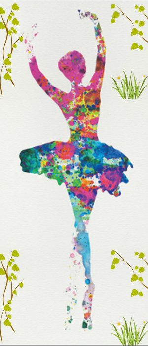

"She," is my favorite dancer in Taiwan.
Her name is Fang-Yi Sheu, a native of Taiwan now living in New York City,
was the principal dancer of the Martha Graham Dance Company.
For her, salute = respect,
and her respect for the dance is "Take each performance as the last time!"
The following is what she said...

------ Hope to inherit hope and move,
continue to dream this one thing.
------ Because of the love of dancing,
dancers use their lives to dance,
notwithstanding someone can't understand it.
------ I am indefinitely grateful to my body,
and I don't know how long I'll be on the stage,
but I know that my stage is not just a stage,
it's a kind of respect.
------ The salute of the dance makes the dancers
know more about themselves
and be more enjoy the meaning of life.
------ One of the most rewarding things is
to "find confidence on the stage."
Because this is my life, I won't stop.
------ Loneliness, persistence, enthusiasm,
confidence, creation, and achievement.
------ "Respect rather believe in yourself,
everything is possible."
------ I want to thanks to myself,
to help me round my dream.
------ Salute, salute all the artists who love the dance,
pay tribute to my body,
and pay tribute to all the family and friends
who love me and who I love.
article
What I want to do most is to inherit and encourage
the new generation of self-affirmation and expectation.
I'll keep dancing this way forever because I want and I love...
lifestyle